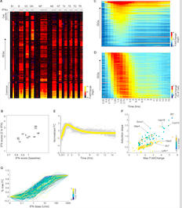

Parsing the interferon transcriptional network and its disease associations
Sara Mostafavi, Hideyuki Yoshida, Devapregasan Moodley, Hugo LeBoité, Katherine Rothamel, Towfique Raj, Chun Jimmie Ye, Nicolas Chevrier, Shen-Ying Zhang, Ting Feng, Mark Lee, Jean-Laurent Casanova, James D Clark, Martin Hegen, Jean-Baptiste Telliez, Nir Hacohen, Philip L De Jager, Aviv Regev, Diane Mathis, Christophe Benoist, Immunological Genome Project Consortium
Cell January 28, 2016
PMC: 26824662
Integrative transcriptome analyses of the aging brain implicate altered splicing in Alzheimer’s disease susceptibility
Towfique Raj, Yang I Li, Garrett Wong, Jack Humphrey, Minghui Wang, Satesh Ramdhani, Ying-Chih Wang, Bernard Ng, Ishaan Gupta, Vahram Haroutunian, Eric E Schadt, Tracy Young-Pearse, Sara Mostafavi, Bin Zhang, Pamela Sklar, David A Bennett, Philip L De Jager
Nature Genetics October 08, 2018
PMC: 26824662